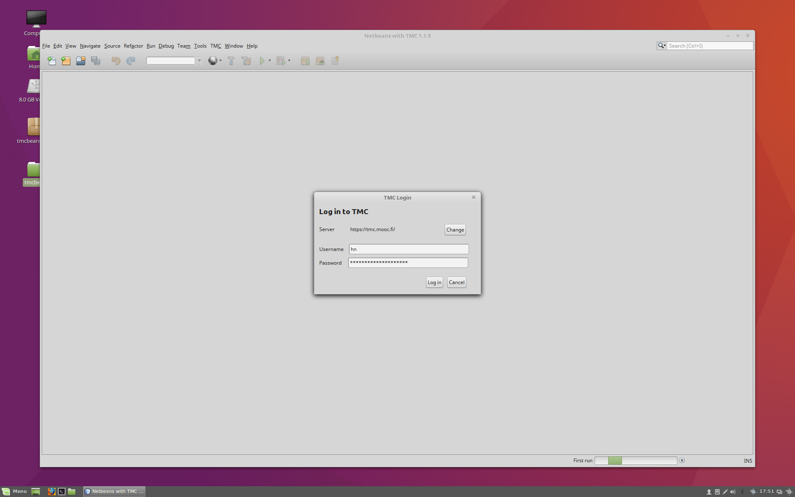
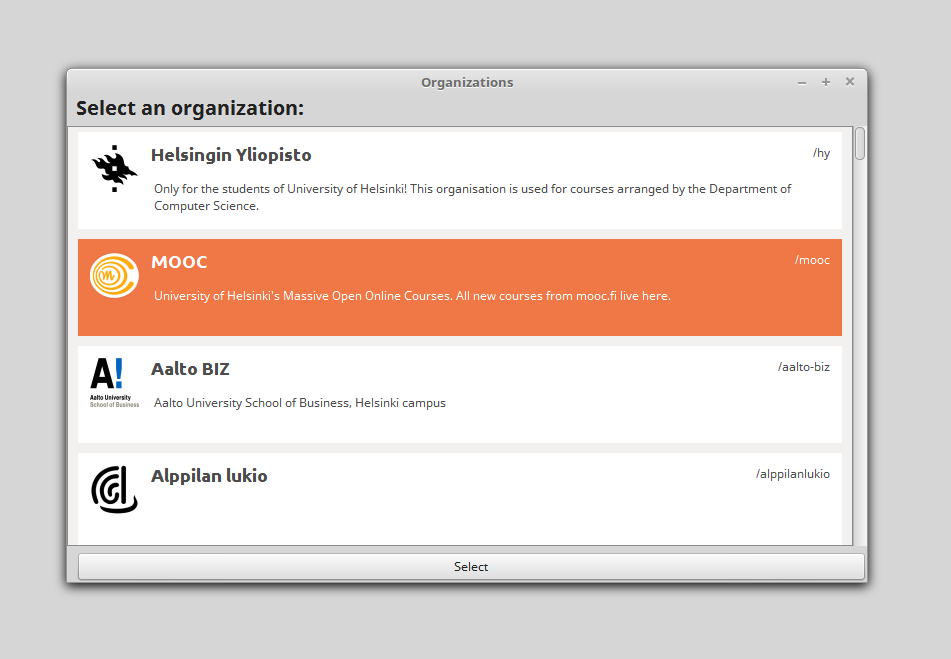
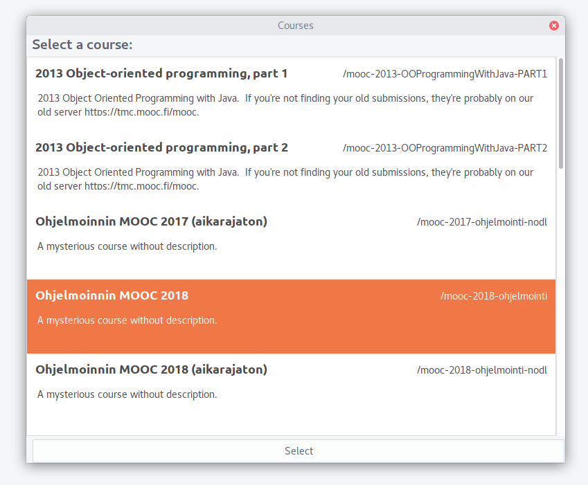
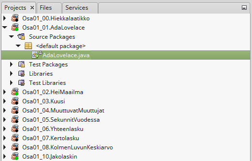
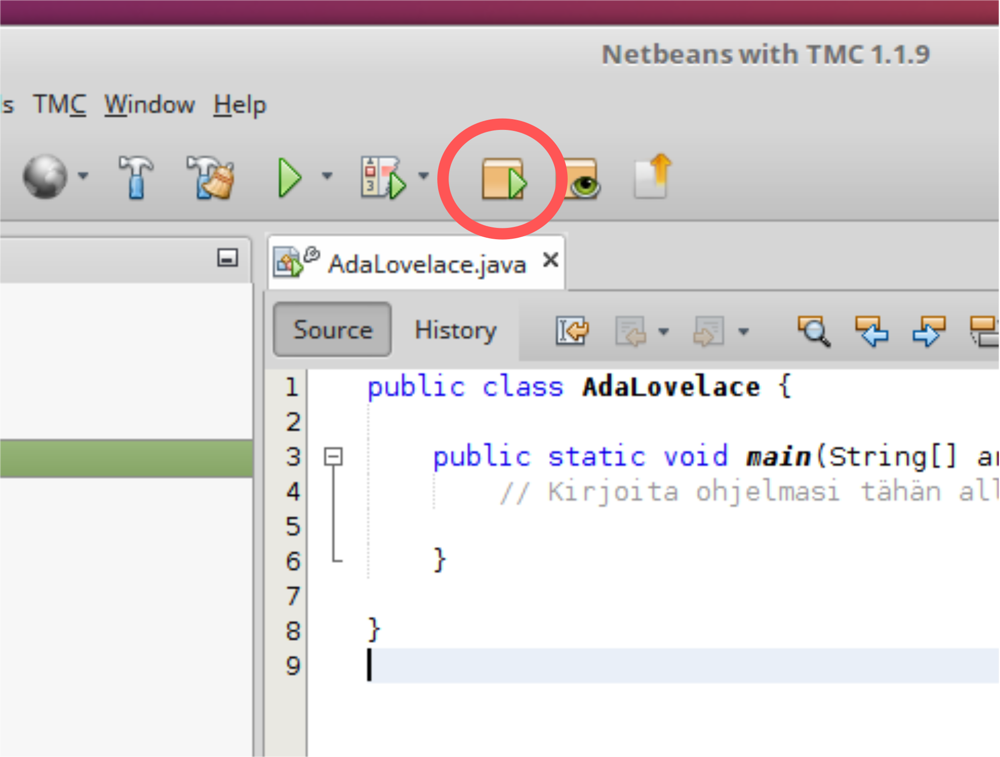
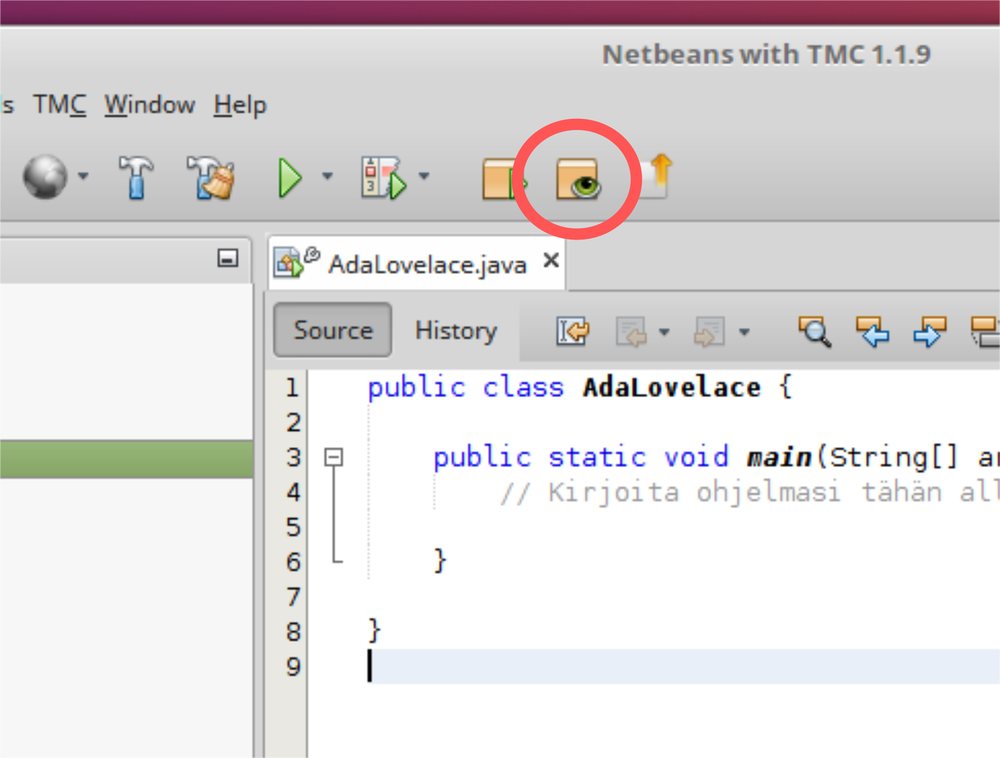

Alla ohjeet miten pääset alkuun ohjelmoinnissa asentamalla Test My Code ympäristön. Aluksi varmista, että tietokoneesi käyttöjärjestelmä on valittu alla oikein ja sitten seuraa ohjeita.
Joudut asentamaan koneellesi sekä tuen Java-ohjelmien kehittämiselle, että ohjelmien kehittämiseen käytettävän NetBeans with TMC-ympäristön.
Suosittelemme asentamaan Linuxissa OpenJDK-paketin.Esimerkiksi ubuntussa sen voi tehdä komentoriviltä seuraavalla komennolla:
sudo apt-get install openjdk-8-jdk
Asenna tämän jälkeen vielä OpenJFX, jota käytetään käyttöliittymien tekemiseen ja käsittelyyn. Tämän asentaminen onnistuu Ubuntussa (komentoriviltä) komennolla:
sudo apt-get install openjfx
Lataa tiedosto http://update.testmycode.net/installers/tmc-netbeans_org_mooc/tmc-netbeans_org_mooc_tmcbeans-linux.sh. Kun tiedoston lataaminen on valmis, tuplaklikkaa tiedostoa. Jos tämä ei toimi, mene terminaalissa kansioon, johon olet ladannut tiedoston ja aja komento:
chmod +x tmc-netbeans_org_mooc_tmcbeans-linux.sh && ./tmc-netbeans_org_mooc_tmcbeans-linux.sh
Tämän jälkeen seuraa ruudulle tulevia ohjeita.
Kun olet asentanut Javan ja TMC:n koneellesi, seuraavina askeleina on TMC-tunnuksen luominen sekä ohjelmoinnin aloittaminen. TMC-tunnus luodaan, jotta voimme pitää kirjaa tekemistäsi tehtävistä.
Mene osoitteeseen https://tmc.mooc.fi/user/new ja luo itsellesi uusi käyttäjätunnus.
Käynnistä asentamasi TMC-ohjelmointiympäristö. Kun ohjelmointiympäristö käynnistyy, se kysyy sinulta käyttäjätunnustasi ja salasanaasi. Aseta käyttäjätunnukseksi ja salasanaksi edellisessä kohdassa luomasi TMC-tunnukset.
Tämän jälkeen ohjelmointiympäristö kysyy organisaatiota, missä teet tehtäviä. Jos teet Ohjelmoinnin MOOCia, valitse MOOC-organisaatio. Jos taas teet kurssia Helsingin yliopistolla, valitse Helsingin yliopisto. Jos teet kurssia jossain muualla, valitse opettajasi ehdottama organisaatio.
Valitse tämän jälkeen haluamasi kurssi. Listatut kurssit riippuvat organisaatiosta -- esimerkiksi Helsingin yliopiston organisaatiossa on saatavilla kevään 2018 ohjelmoinnin perusteet. MOOC-organisaatiossa kurssi on taas Ohjelmoinnin MOOC.
Tämän jälkeen sinulle avautuu TMC:n settings ikkuna. Oletusasetukset pitäisi olla riittävät kurssin tekemiseen. Huom! Tästä asetusnäytöstä projektikansion vaihtaminen on aiheuttanut joillekkin Windows-käyttäjille ongelmia. Tästä syystä emme suosittele Windowsin käyttäjille projektikansion vaihtamista automaattisesti synkronoituviin kansiohin kuten OneDriveen, Google Driveen, Dropboxiin tai verkkolevyihin.
Kun olet kirjautunut ohjelmointiympäristöön sekä valinnut organisaation ja kurssin, TMC ehdottaa ladattavia tehtäviä mikäli tehtäviä on ladattavissa. Lataa haluamasi tehtävät -- tehtävät liittyvät osoitteessa https://materiaalit.github.io/ohjelmointi-18 oleviin osiin.
Lataa tehtävät koneellesi.
Nyt tehtävät ovat ladattuna ohjelmointiympäristössä. Tehtävät näkyvät vasemmalla olevassa listauksessa. Valitse listauksesta Projects-välilehti, niin tehtäviin liittyy myös oikein saamisesta kertova pieni palloindikaattori.
Avaa tehtävä Osa01_01.AdaLovelace. Tämä tapahtuu tuplaklikkaamalla tehtävää ja etsimällä tehtävän sisältä lähdekooditiedosto AdaLovelace.java. Lähdekooditiedostot löytyvät toistaiseksi aina tehtäväpohjan kansiosta "Source Packages".
Saat ensimmäisen tehtävän auki editorinäkymään tuplaklikkaamalla tiedostoa AdaLovelace.java. Editorinäkymä on TMC:n keskellä näkyvä tekstieditori, missä voit tehdä muutoksia ohjelman lähdekoodiin.
Muokkaa lähdekoodia siten, että editorissa on seuraava teksti.
public class AdaLovelace {
public static void main(String[] args) {
System.out.println("Ada Lovelace :D");
}
}

Voit suorittaa tehtävään liittyvän lähdekoodin klikkaamalla TMC:n play-nappia. Jos muokkasit AdaLovelace.java-tiedostoa edellä kuvatun näköiseksi, ohjelman tulostus on nyt seuraavanlainen.
Ada Lovelace :D
Voit muokata lähdekoodia ja ajaa ohjelman uudestaan. Ohjelmia kannattaakin ajaa usein, sillä niiden ajaminen on hyvä ensimmäinen askel toiminnan tarkastamiseen.
Tehtävissä tulee usein mukana automaattisia testejä, jotka antavat palautetta tehtävän onnistumisesta. Testit ajetaan klikkaamalla TMC:ssä testinappia, joka näyttää seuraavalta.
Kun suoritat yllä luodun AdaLovelace-tehtävän testit, testien pitäisi antaa virheilmoitus. Virheilmoitusta tarkastelemalla saamme selville, että tulostus ei ollut toivottu. Tulostuksen olisi pitänyt olla muotoa "Ada Lovelace".
Ohjelman tulostus on muotoa "Ada Lovelace" kun muokkaat lähdekoodin seuraavanlaiseksi.
public class AdaLovelace {
public static void main(String[] args) {
System.out.println("Ada Lovelace");
}
}
Aja nyt tehtävään liittyvät testit uudestaan. Tällä kertaa testit menevät läpi ja TMC kysyy lähetetäänkö tehtävä palvelimelle.
Tehtävän lähettäminen palvelimelle tarkoittaa tehtävän palauttamista arvostelua varten. Tehtävät tarkastetaan lähes poikkeuksetta automaattisesti, joten saat tehtävistä pisteet (tai mahdollisen virheviestin) nopeasti.
Tehtävän voi palauttaa joko testien ajamisen jälkeen kun testit menevät läpi, tai erikseen TMC:ssä olevaa nappia painamalla. Tehtävän palauttamiseen liittyvä nappi näyttä seuraavalta.
Kun tehtävä on lähetetty palvelimelle ja siihen liittyvät testit menevät läpi, saat tehtävästä pisteet sekä mahdollisen lyhyen kyselyn. Vastaathan aina kyselyihin, sillä vastaukset auttavat kurssien kehityksessä.
Voit tarkastaa oman pistetilanteesi kirjautumalla osoitteessa https://tmc.mooc.fi/ olevaan verkkopalveluun. Verkkopalveluun kirjaudutaan TMC-tunnuksilla.